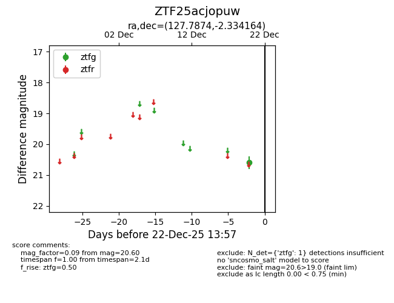
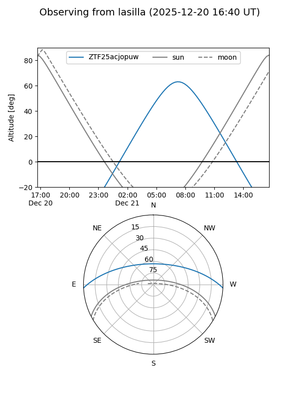
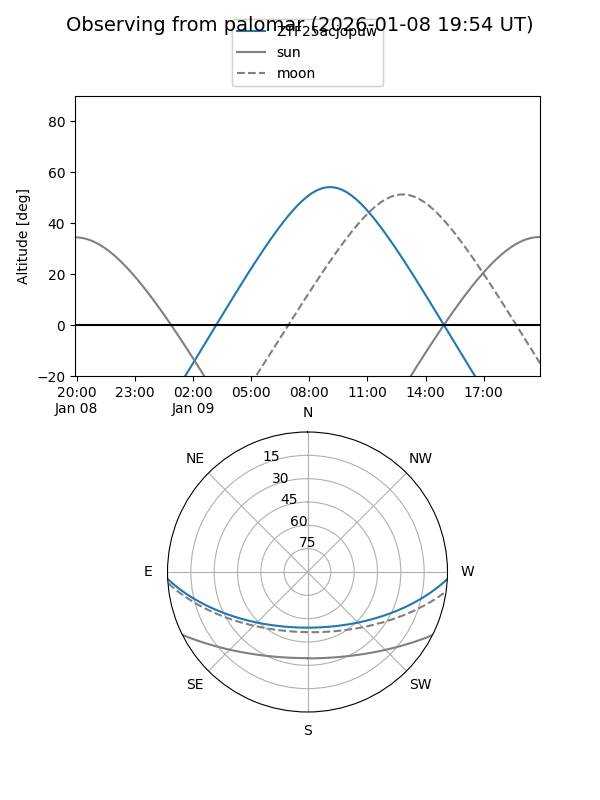

ZTF25acjopuw
Target ZTF25acjopuw at 2025-12-31 17:00
Aliases and brokers:
FINK:
Lasair:
ALeRCE:
alt names
ZTF25acjopuw (ztf,fink_ztf)
Coordinates:
equatorial (ra, dec) = 127.7874,-2.33416
equatorial (HMS+DMS) = 08:31:08.98,-02:20:02.99
galactic (l, b) = (227.0725,+20.86875)
Flags:
Photometry:
last ztfg=20.60
1 ztfg detections
Lightcurve

Visibility


Additional plots